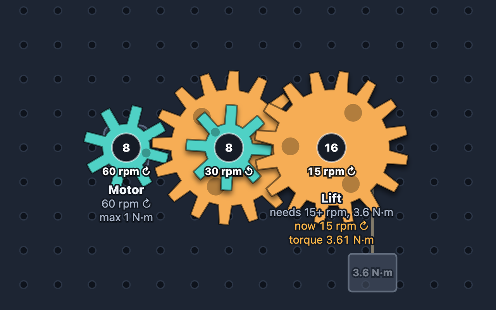
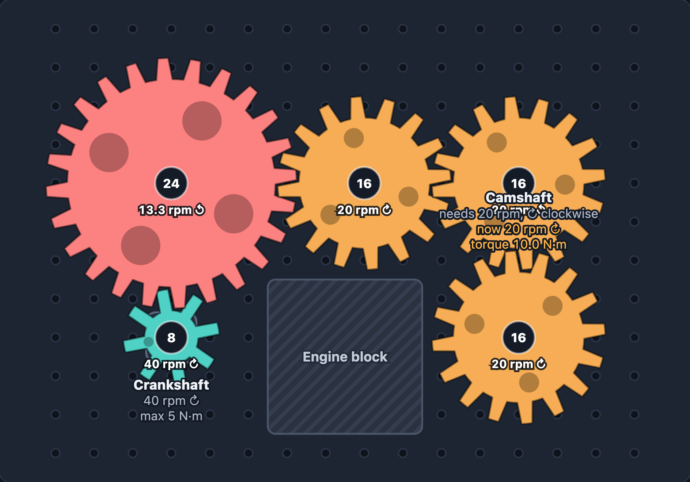
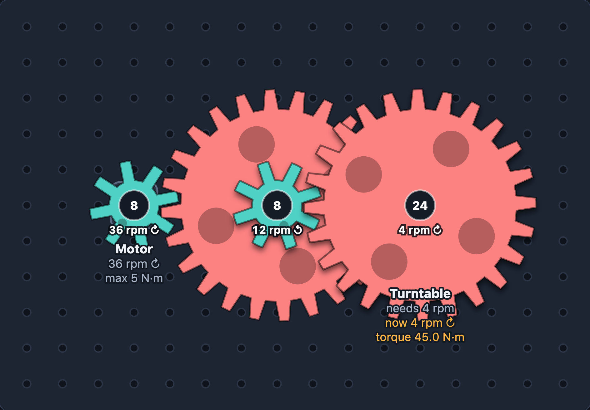

Link gears so a machine turns at the right speed, in the right direction and with enough force: from gear ratios to compound trains and efficiency.
UK Years 8–13Ages 12–18US grades 7–12D&T · Physics
dowplay.com/games/gear-garage
Runs in any browser on Chromebooks, iPads, laptops and phones. No accounts, no ads, nothing to install. Progress is saved only on the device being used.
A separate PDF has the worksheets on their own, ready to print for students.
Gear Garage turns mechanisms into puzzles. Students place gears on a pegboard to connect a motor to a machine (a wheel, a conveyor, a fan, a winch, a camshaft, a turntable, a garage door, a lift) so that it turns at the right speed, in the right direction and with enough force, within a budget. The gears mesh, jam and stall exactly as real ones would. Its eight levels run from Year 8 to Year 13.
Each lesson plan fills 60 minutes. The levels also work as a homework or a club activity: each takes 5–15 minutes.
| Course | Content | Levels |
|---|---|---|
| KS3 Science (England) | Forces: the moment as the turning effect of a force; simple machines give a bigger force at the expense of a smaller movement | 3–5 |
| KS3 Design & Technology | How more advanced mechanical systems enable changes in movement and force | All |
| GCSE Physics / Combined Science | Moments, levers and gears; work done and power; efficiency | 3–8 |
| GCSE Design & Technology | Mechanical devices: changing the type of motion and the size and direction of forces; gear trains, idlers, compound gears, rack and pinion | 1–7 |
| A-level Physics / Engineering | Rotational motion: torque, angular speed and power (P = T ω); efficiency of transmissions | 7–8 |
| US (NGSS) | MS-ETS1-1, MS-ETS1-2, HS-ETS1-3: designing solutions within criteria and constraints, such as cost and size | All |
The pegboard follows real gear geometry:
A machine's speed counts as right within 1% either way. Torque (turning force) goes up by the same factor the speed goes down.
| Part | Details |
|---|---|
| Gears | 8, 16, 24, 32 and 40 teeth (radius 1, 2, 3, 4 and 5 holes), costing £2, £3, £4, £5 and £6 |
| Motor | Turns at a set speed (rpm) and direction, and can give up to a set torque (N·m) |
| Machines | Each needs a speed, a direction or a torque (some need two of these) |
| Compound gears | Levels 6 and 8: two gears stacked on one axle turn together at the same speed |
| Rack | Level 7: a straight bar of teeth. Holes are 1 cm apart there, so a gear's radius is N ÷ 8 cm |
| Efficiency | Level 8: each mesh passes on only 95% of the power |
The gears really turn, with their teeth meshing. Ticking Show the numbers labels every gear with its speed (rpm) and direction, and every machine with what it needs, what it's getting and its torque. The worksheet figures are taken straight from that view.
1 star for a working machine, 2 for staying within the budget, 3 for matching the cheapest design we know. Students sometimes match it with a different set of gears.
Real gears lose a little energy at every mesh (the game only models this on level 8), have a little slack (backlash) between teeth, and need stronger, wider teeth for big torques. In the game, gears never wear or break.
Mesh: two gears' teeth interlocking. Driver / driven: the gear that pushes, and the gear being pushed. Idler: a gear in between that changes direction but not the overall speed. Torque: turning force (N·m). rpm: revolutions per minute. Compound train: two gears on one axle, so the ratios multiply. Rack and pinion: a gear driving a straight bar of teeth. Efficiency: power out ÷ power in.
"3 stars" is the cheapest design our checker found. Keep it to yourself until students have had a go: the fun is in the search.
| Time | Activity |
|---|---|
| Starter 10 min | Open Level 1, First Gear. Ask which way the wheel will turn if one gear on the motor meshes with one on the wheel. Build it and watch: opposite ways. Then Level 2, Same Way Round: "How do we make the drum turn the same way as the motor?" Take ideas before adding an idler. |
| Main 1 15 min | Worksheet 1, Part A: directions in a chain, speeding up and slowing down, and how far apart gears must be. |
| Main 2 25 min | Pairs play levels 1–4 and fill in the record table (Part B). Before pressing Check, one partner predicts the output's speed and direction. |
| Plenary 10 min | Part C together: the Round the Engine figure. Why do the three 16-tooth gears all turn at 20 rpm? Exit ticket: what do you gain and lose when a small gear drives a big one? |
Use the in-game hints. Ask students to count along the chain out loud: "clockwise, anticlockwise, clockwise…"
Tick Show the numbers and predict every gear's speed before checking. Try Level 5, Round the Engine.
Homework: Worksheet 1, Part D, and get 3 stars on Level 4.
| Time | Activity |
|---|---|
| Starter 10 min | Show Level 6, Compound Gears: "The turntable must turn 9 times slower, but the biggest pair only gives 5 times. What can we do?" Show a gear stacked on another's axle, and how the two slow-downs multiply. |
| Main 1 15 min | Worksheet 2, questions 1–2: idlers and compound trains, using the game's numbers. |
| Main 2 25 min | Pairs play levels 5–8. Use questions 3–4 to guide Garage Door and Every Mesh Counts: calculate first, then build. |
| Plenary 10 min | Plan question 5 together: designing a gearbox. Finish it as homework. |
Give students a table to fill in: gear, teeth, speed, direction. In Garage Door, convert rpm to rad/s together first.
Find a design for Every Mesh Counts that isn't compound, and explain why it stalls. Research how a bicycle's gears or a clock's gear train work.
Homework: Worksheet 2, question 5 (6 marks).
A1Gear A is on a motor that turns clockwise.
a) Which way does each of gears B, C and D turn? [2]
b) How could you make gear D turn clockwise? [1]
A2A 24-tooth gear on a motor turning at 20 rpm drives an 8-tooth gear.
a) How many times faster does the 8-tooth gear turn? [1]
b) What is its speed in rpm? [1]
A3An 8-tooth gear on a motor turning at 30 rpm drives a 32-tooth gear on a winch.
a) What is the winch's speed? [1]
b) The motor gives 2 N·m of torque. Ignoring friction, what torque does the winch get? [2]
A4In Gear Garage, two gears mesh when their axles are (teeth of one + teeth of the other) ÷ 8 holes apart. How far apart must these be?
a) two 16-tooth gears b) an 8-tooth and a 24-tooth gear c) an 8-tooth and a 32-tooth gear [3]
Before you press Check my gears, predict which way and how fast the machine will turn. Record your best design for each level.
| Level | Gears I used | Cost | Stars | What went wrong, and how I fixed it |
|---|---|---|---|---|
| 1 | £ | |||
| 2 | £ | |||
| 3 | £ | |||
| 4 | £ |
This is Round the Engine, solved, with Show the numbers ticked. The crankshaft's 8-tooth gear turns at 40 rpm and drives a chain of gears around the engine block to the camshaft. Each gear shows its number of teeth and its speed.

C1The 24-tooth gear turns at 13.3 rpm. Show how this is worked out from the crankshaft's speed. [2]
C2The three 16-tooth gears all turn at 20 rpm. Why do they all turn at the same speed? [1]
C3The camshaft turns at half the crankshaft's speed. Explain this using just the first and last gears. [2]
C4There are five gears in the chain. Does the camshaft turn the same way as the crankshaft? How do you know? [2]
D1A bicycle has gears. Explain why a low gear makes it easier to ride up a steep hill, and what the rider gives up. [3]
1Idler gears (Round the Engine). An 8-tooth gear on a 40 rpm crankshaft drives, in turn, gears with 24, 16, 16 and 16 teeth. The last 16-tooth gear is on the camshaft.
a) What is the camshaft's speed? [1]
b) Show that the 24-tooth gear has no effect on the camshaft's speed. [2]
2Compound gears. This is the solved Compound Gears level. The 24-tooth gear in the middle has an 8-tooth gear stacked on the same axle.

a) Why does the stacked 8-tooth gear turn at 12 rpm? [1]
b) How many times slower than the motor does the turntable turn? Show that the two stages multiply. [2]
c) The motor gives 5 N·m. Ignoring friction, what torque does the turntable get? [1]
d) Using 8-, 24- and 40-tooth gears, design a compound train that turns 15 times slower. [2]
3Rack and pinion (Garage Door). The motor turns at 30 rpm. The door must rise at 9–10 cm/s.
a) Convert 30 rpm to rad/s. [1]
b) A 24-tooth gear on the motor has a radius of 3 cm. How fast do its teeth move? [1]
c) Which of the 8-, 16-, 24- and 32-tooth gears on the motor gives a door speed of 9–10 cm/s? Show your working. [2]
d) In a simple chain, why doesn't the size of the gear touching the rack change the door's speed? [2]
4Efficiency (Every Mesh Counts). The motor gives 1 N·m at 60 rpm. The lift needs 3.6 N·m at 15 rpm or faster. Each mesh passes on 95% of the power.
a) What is the motor's power output? [2]
b) How many times slower must the lift turn? What torque would it get with no losses? [2]
c) A compound train does this in two meshes. What torque does the lift get? [2]
d) What would a third mesh do? [2]
5Evaluate. A machine needs a 3000 rpm motor turned down to 100 rpm. Evaluate three ways of doing it: a single pair of gears, a simple train with idlers, and a compound train. Consider size, number of meshes, efficiency and direction, and use evidence from Gear Garage. [6]
Continue on lined paper if you need more space.
A1a) B anticlockwise, C clockwise, D anticlockwise (2 marks for all three).
b) Add one more gear (an idler) anywhere in the chain, or remove one, so there's an odd number of gears.
A2a) 24 ÷ 8 = 3 times.
b) 20 × 3 = 60 rpm.
A3a) 30 × 8 ÷ 32 = 7.5 rpm.
b) Four times slower, so four times the torque (1): 2 × 4 = 8 N·m (1).
A4a) 32 ÷ 8 = 4 holes. b) 32 ÷ 8 = 4 holes. c) 40 ÷ 8 = 5 holes.
C140 × 8 ÷ 24 (1) = 13.3 rpm (1).
C2Gears of the same size meshing together turn at the same speed.
C3Only the first and last gears decide the speed (1): 40 × 8 ÷ 16 = 20 rpm, half the speed (1).
C4Yes (1): each mesh reverses the direction, and with five gears (an odd number) the last turns the same way as the first (1).
D1In a low gear the pedals turn more times for each turn of the wheel (1), so the wheel turns slower but with more torque (1), making it easier to push up the hill; the rider gives up speed (1).
Free engineering games for ages 12–18: Light It Up (circuits), Bridge Builder (structures) and Grid Manager (energy), each with a free teacher pack. Ideas for new games? Get in touch at dowplay.com/about#contact.
1a) 40 × 8 ÷ 16 = 20 rpm.
b) Going through the 24: 40 × 8 ÷ 24 = 13.3 rpm, then 13.3 × 24 ÷ 16 = 20 rpm (1). The 24s cancel: 40 × (8 ÷ 24) × (24 ÷ 16) = 40 × 8 ÷ 16 (1).
2a) It's on the same axle as the 24-tooth gear, so they turn together.
b) 24 ÷ 8 = 3 at each stage (1); 3 × 3 = 9 times: 36 → 12 → 4 rpm (1).
c) 5 × 9 = 45 N·m (as the game shows).
d) 8 → 24 (3 times) (1), then a stacked 8 → 40 (5 times): 3 × 5 = 15 (1).
3a) 30 × 2π ÷ 60 = π ≈ 3.14 rad/s.
b) v = 3.14 × 3 = 9.4 cm/s.
c) Radii 1, 2, 3 and 4 cm give 3.1, 6.3, 9.4 and 12.6 cm/s (1); only the 24-tooth gear works (1).
d) Meshing teeth move at the same speed (1), so in a simple chain every gear's teeth, and the rack, move at the motor gear's tooth speed (1).
4a) ω = 60 × 2π ÷ 60 = 2π rad/s (1); P = 1 × 2π = 6.3 W (1).
b) 60 ÷ 15 = 4 times (1); 1 × 4 = 4 N·m (1).
c) 4 × 0.95 × 0.95 (1) = 3.61 N·m, just enough (1).
d) 4 × 0.95³ = 3.43 N·m (1), less than 3.6 N·m, so the motor stalls (1).
| Level | Description |
|---|---|
| 3 (5–6 marks) | A detailed evaluation of all three options, comparing size, meshes, efficiency and direction, with calculations or evidence from the game. Reaches a justified conclusion (usually a compound train). |
| 2 (3–4 marks) | Compares at least two options with some evidence. The conclusion is partial or not fully justified. |
| 1 (1–2 marks) | Simple statements about one or two options, with little comparison. |
| 0 | Nothing worthy of credit. |
Credit references to real examples: car gearboxes, clocks, bicycles, and to the extra torque the output gets (30 times, less losses).